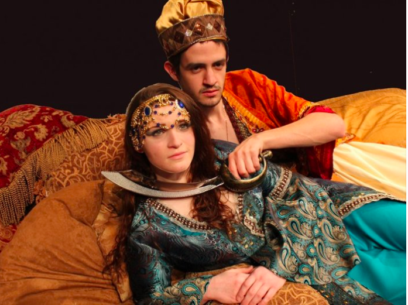

[Shahryar] said, "I command thee to take my wife and smite her to death; for she hath broken her plight and her faith." So he carried her to the place of execution and did her die. Then King Shahryar took brand in hand and repairing to the Serraglio slew all the concubines and their Mamelukes. He also sware himself by a binding oath that whatever wife he married he would abate her maidenhead at night and slay her next morning to make sure of his honour (Burton)
Shahryar's sinister story of violence throughout the Nights is oftentimes overshadowed by the grandious stories that Scheherazade tells. However, it is immportant to remember that there is that constant possibility of death that hangs over Scheherazade while she is telling her stories.
As explored (and as this website will explore more) in Mary Zimmerman's play, Shahryar's animosity towards women and Scheherazade illuminates underlining violence. Throughout the acts the Sultan holds a dagger to Scheherazad's neck explicitly holding the threat of instant death over her head.
Here we will look at the modern takes of violence that varies from the endings in the original translations and texts.
Gautier's "The Thousand and Second Night"
While never explicitly bringing Shahryar as a character into the story, Gautier cleverly plays on Scheherazade's stress when trying to come up with a new story, and the insatiable nature of Shahryar. The author jumps on Scheherazade's flaws in an environment with no room for error - with no story, she will die.
Edgar Allan Poe's "The Thousand and Second Night of Scheherazade
Similar to Gautier, Poe takes a failure in Scheherazade's storytelling, humanizing her and revealing the potential of Shahryar. Dissatisfied with her story, Shahryar treats her just as he did every woman before.